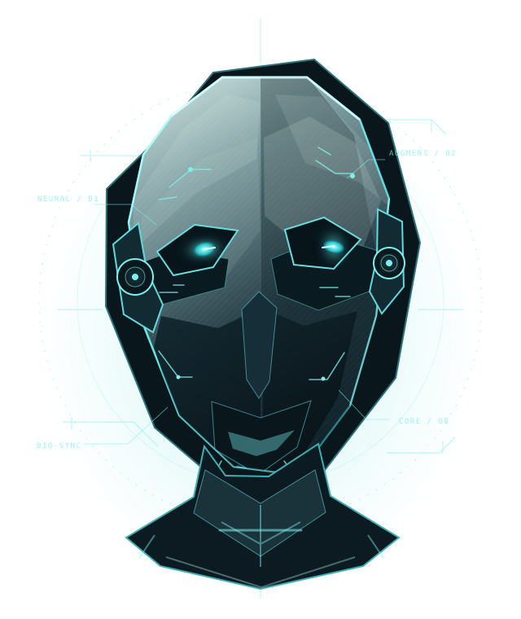

SYS / 001⌁
NEURAL
INTERFACE
A more intuitive connection between human thought and digital worlds.
Explore system ↗We are not building a world beyond humanity. We are building the tools that help humanity go beyond itself.

The line between human and machine is not a boundary. It is a beginning.
Imagine technology that works with your body, learns from your mind, and gives your ideas room to become reality. CYBORG is a vision of human capability amplified through thoughtful engineering.
Understand the protocol ↗CONCEPTUAL DESIGN LANGUAGE
NOT REAL-WORLD PERFORMANCE CLAIMS
AUGMENT YOUR EVERYDAY
A concept ecosystem where intelligent interfaces, responsive materials, and human insight work as one.
A more intuitive connection between human thought and digital worlds.
Explore system ↗Responsive support that moves with you and adapts to changing needs.
Explore system ↗New ways to interpret, understand, and interact with the world around us.
Explore system ↗ALL SYSTEMS SHOWN ARE FICTIONAL CONCEPT EXPLORATIONS.
THE HUMAN-CENTRIC LOOP
Progress means more when people stay at the centre of it.
Start with real human needs, limitations, and ambitions.
Bring technology into the experience—not in the way of it.
Keep learning, adapting, and making room for what comes next.
Curiosity is the first upgrade. Keep questioning what is possible.
Start a conversation ↗